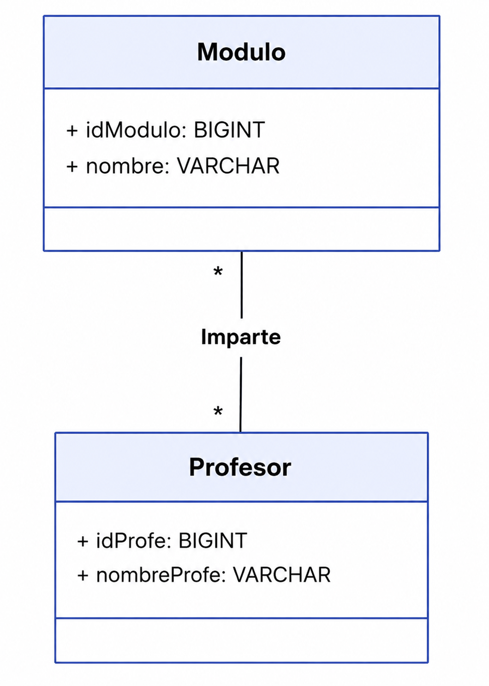
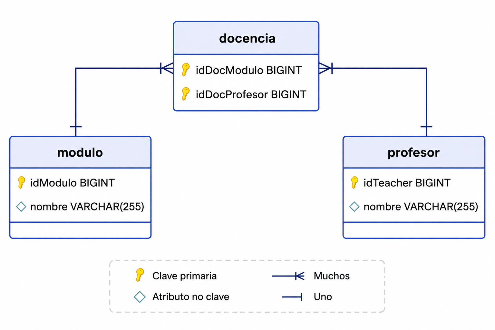

Bloque 3. Relaciones N a M¶
1. Relaciones muchos a muchos¶
Las relaciones muchos a muchos, junto con las relaciones 1:N, son las más comunes en el mundo real. Se definen cuando dos entidades pueden participar dentro de una relación más de una vez. Por ejemplo:
- Un profesor puede impartir varios módulos, y un módulo puede ser impartido por varios profesores.
- Una app móvil puede ejecutarse en varios sistemas operativos, y un sistema operativo puede soportar varias apps móviles.
- Etc.
Esta relación en el modelo relacional se representa:
- Mediante una tabla intermedia que contiene las claves primarias de las dos entidades relacionadas.
- De esta tabla saldrán dos claves ajenas que apuntarán a las dos entidades relacionadas, concretamente a sus claves primarias.
- Visualmente, en el SGBD esta tabla contendrá las relaciones entre las claves principales de las dos entidades relacionadas.
2. ¿Tabla nueva, clase nueva?¶
Centrándonos ahora en los diagramas de clases, este tipo de relaciones muchos a muchos se representa mediante una asociación entre las dos clases relacionadas.
Esta asociación se puede anotar con una etiqueta que indique la multiplicidad (por ejemplo, "1.." o "*") para mostrar que cada instancia de una clase puede estar asociada con múltiples instancias de la otra clase.

Codificado de manera simple en Java quedaría así:
class Profesor {
...
private Set<Modulo> losModulos; // Relación muchos a muchos
}
class Modulo {
...
private Set<Profesor> losProfesores; // Relación muchos a muchos
}
En resumen¶
Podemos concluir que:
- En el modelo relacional, las relaciones muchos a muchos se representan mediante una tabla intermedia que contiene las claves primarias de las dos entidades relacionadas.
- En nuestras clases, las relaciones muchos a muchos se representan mediante una asociación entre las dos clases relacionadas, normalmente bidireccional.
A continuación veremos cómo quedaría anotado con Hibernate, explicándolo a medida que lo hacemos dentro del código.
3. Definimos la relación¶
Vamos a definir la relación muchos a muchos en las dos clases que participan en ella, pero, como siempre, delegaremos la responsabilidad en una de las dos. Esta puede considerarse la propietaria de la relación, y será la que contenga la definición de la tabla intermedia.
3.1. Clase no propietaria¶
Comenzamos por la parte sencilla, que es la no propietaria, que en este caso será la clase Modulo.
@Data
@NoArgsConstructor
@Entity
@Table(name = "modulo")
public class Modulo {
@Id
@GeneratedValue(strategy = GenerationType.IDENTITY)
private Long idModulo;
@Column
private String nombre;
public Modulo(String nombre) {
super();
this.nombre = nombre;
}
@ToString.Exclude
@EqualsAndHashCode.Exclude
@ManyToMany(
cascade = CascadeType.PERSIST,
fetch = FetchType.LAZY,
mappedBy = "losModulos")
private Set<Profesor> losProfesores = new HashSet<>();
public void addProfesor(Profesor p) {
if (p != null && !losProfesores.contains(p)) {
losProfesores.add(p);
p.addModulo(this);
}
}
}
3.2. Clase propietaria¶
Ahora vamos a definir la clase propietaria, que en este caso será la clase Profesor.
@Data
@NoArgsConstructor
@Entity
@Table(name = "profesor")
public class Profesor {
@Id
@GeneratedValue(strategy = GenerationType.IDENTITY)
private Long idTeacher;
@Column
private String nombre;
public Profesor(String nombre) {
this.nombre = nombre;
}
@ToString.Exclude
@EqualsAndHashCode.Exclude
@ManyToMany(
cascade = CascadeType.PERSIST,
fetch = FetchType.LAZY)
@JoinTable(
name = "docencia",
joinColumns = {
@JoinColumn(
name = "idDocProfesor",
foreignKey = @ForeignKey(name = "FK_DOC_PROF"))
},
inverseJoinColumns = {
@JoinColumn(
name = "idDocModulo",
foreignKey = @ForeignKey(name = "FK_DOC_MOD"))
}
)
private Set<Modulo> losModulos = new HashSet<>();
public String mostrarModulos() {
String res = "Módulos de " + this.nombre + "\n";
for (Modulo m : losModulos) {
res += m.toString() + "\n";
}
return res;
}
public void addModulo(Modulo m) {
if (m != null && !losModulos.contains(m)) {
losModulos.add(m);
m.addProfesor(this);
}
}
}
La relación creada será la siguiente:

4. Prueba y ejecución¶
Se han añadido algunos registros a la base de datos mediante un script de importación generado con ayuda de Gemini, que tienes enlazado a continuación como importDocencia.sql.
Finalmente, se ha preparado un CommandLineRunner para probar la relación y mostrar los resultados por consola:
@Component
public class TestN_M {
private static final Logger myLog = LoggerFactory.getLogger(TestN_M.class);
@PersistenceContext
private EntityManager entityManager;
@Transactional
public void ejecutar() {
Profesor p = entityManager.find(Profesor.class, 1L);
myLog.info(p.toString());
myLog.info(p.mostrarModulos());
// añadimos nuevos
Profesor profe = new Profesor("Joan Gerard");
profe.addModulo(new Modulo("Programación de Inteligencia Artificial"));
profe.addModulo(new Modulo("Sistemas de Big Data"));
profe.addModulo(new Modulo("Sistemas de aprendizaje automático"));
profe.addModulo(new Modulo("Proyecto intermodular"));
entityManager.persist(profe);
myLog.info(profe.toString());
myLog.info(profe.mostrarModulos());
}
}
4.1. Estudio de las salidas por consola¶
Creación de las tablas¶
Se crean las tres tablas: docencia, modulo y profesor. En la tabla docencia se añaden las claves ajenas que apuntan a las tablas profesor y modulo.
Hibernate:
create table docencia (
idDocModulo bigint not null,
idDocProfesor bigint not null,
primary key (idDocModulo, idDocProfesor)
) engine=InnoDB
Hibernate:
create table modulo (
idModulo bigint not null auto_increment,
nombre varchar(255),
primary key (idModulo)
) engine=InnoDB
Hibernate:
create table profesor (
idTeacher bigint not null auto_increment,
nombre varchar(255),
primary key (idTeacher)
) engine=InnoDB
Hibernate:
alter table docencia
add constraint FK_DOC_MOD
foreign key (idDocModulo)
references modulo (idModulo)
Hibernate:
alter table docencia
add constraint FK_DOC_PROF
foreign key (idDocProfesor)
references profesor (idTeacher)
La tabla docencia utiliza como clave primaria compuesta la combinación de idDocModulo e idDocProfesor, que a su vez son las claves ajenas que permiten relacionar profesores y módulos.
Consulta del profesor y sus módulos asociados¶
Se realiza un SELECT para seleccionar el profesor. Se muestra por pantalla. Al mostrar los módulos asociados, se realiza la carga en diferido, ejecutando una consulta con un JOIN entre la tabla intermedia y la tabla de módulos. Finalmente, se muestran los módulos.
# Consulta del profesor
Hibernate:
select
p1_0.idTeacher,
p1_0.name
from
profesor p1_0
where
p1_0.idTeacher=?
# Muestra del profesor
Profesor(idTeacher=1, name=Joan Garcia)
# Consulta de los módulos asociados al profesor
Hibernate:
select
em1_0.idDocProfesor,
em1_1.idModulo,
em1_1.nombre
from
docencia em1_0
join
modulo em1_1
on em1_1.idModulo=em1_0.idDocModulo
where
em1_0.idDocProfesor=?
# Mostramos los módulos
Módulos de Joan Garcia
Modulo(idModulo=3, nombre=Programación)
Modulo(idModulo=2, nombre=Bases de Datos)
Creación de un nuevo profesor y asociación de nuevos módulos¶
Se crea un profesor y se le asocian 4 módulos. Al guardarlo implica realizar 9 INSERT:
- El profesor.
- Los 4 módulos.
- Las 4 relaciones entre ese profesor y los 4 módulos en la tabla intermedia.
# El profesor
Hibernate: insert into profesor (name) values (?)
# Los 4 módulos
Hibernate: insert into modul (name) values (?)
Hibernate: insert into modul (name) values (?)
Hibernate: insert into modul (name) values (?)
Hibernate: insert into modul (name) values (?)
# Las 4 relaciones en la tabla intermedia
Hibernate: insert into docencia (idDocProfesor,idDocModulo) values (?,?)
Hibernate: insert into docencia (idDocProfesor,idDocModulo) values (?,?)
Hibernate: insert into docencia (idDocProfesor,idDocModulo) values (?,?)
Hibernate: insert into docencia (idDocProfesor,idDocModulo) values (?,?)
Finalmente, mostramos el profesor: Profesor(idTeacher=13, name=Joan Gerard)
Y mostramos los módulos asociados al profesor:
Módulos de Joan Gerard
Modulo(idModulo=13, name=Sistemas de aprendizaje automático)
Modulo(idModulo=14, name=Programación de Inteligencia Artificial)
Modulo(idModulo=15, name=Sistemas de Big Data)
Modulo(idModulo=16, name=Proyecto intermodular)
Reducir espacio en las consultas del log
Para reducir el espacio en el log, puedes modificar la propiedad de application.properties:
Esta propiedad puede configurarse como true o false:
true: Hibernate formateará las consultas SQL en el log, haciéndolas más legibles, pero ocupando más espacio en cuanto a líneas.false: Hibernate no formateará las consultas SQL en el log, mostrando una sola línea por consulta.